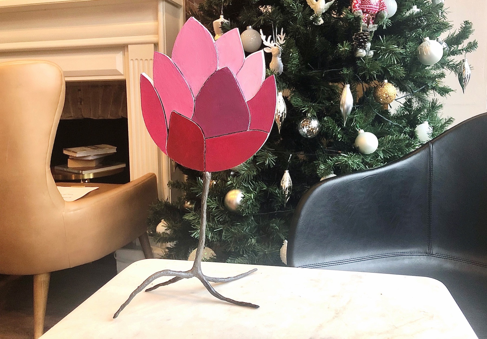
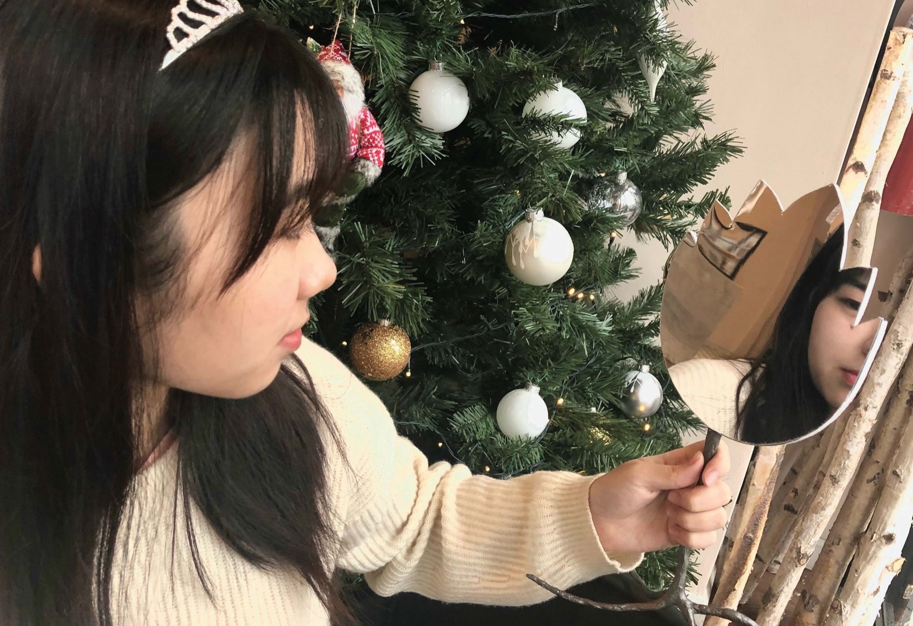
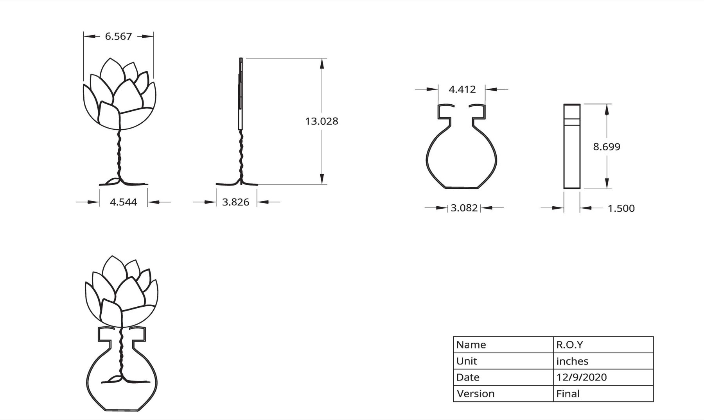
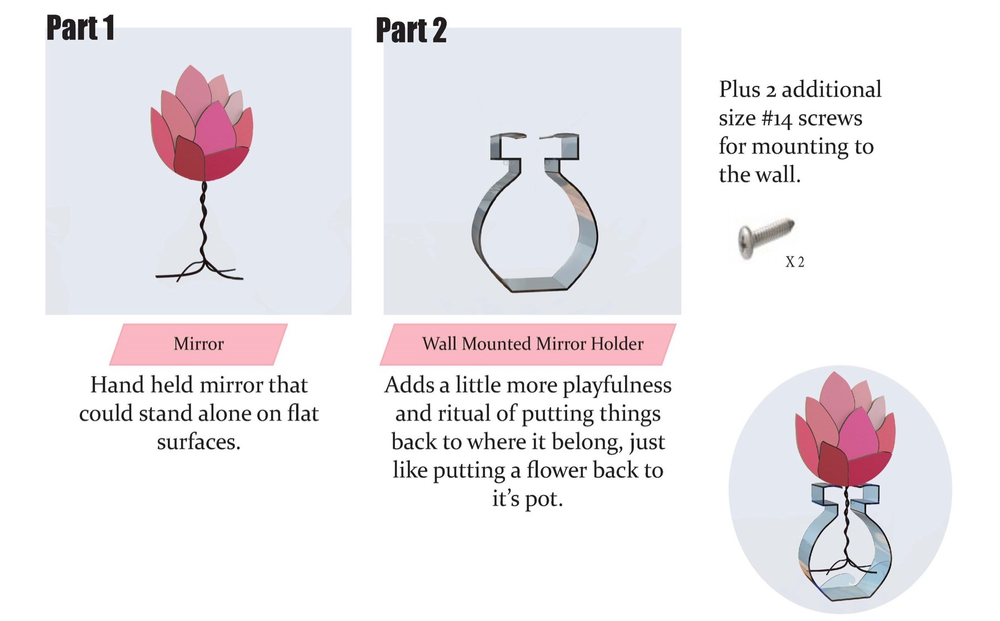

A hand-held mirror that mounts on the wall as decoration, combining the traditional symbolic lotus flower with a modern, playful mirror holder.

A hand-held mirror that could be mounted on the wall as decoration. It combines the traditional symbolic lotus flower with a modern playful mirror holder.


